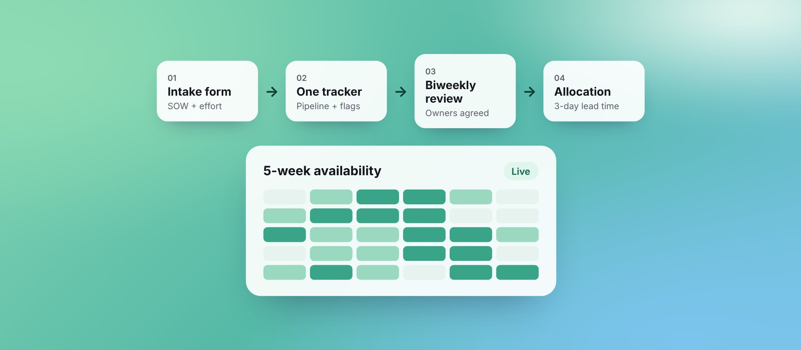

From ad-hoc requests to CapacityOS
Replaced last-minute staffing requests with one intake door, then built an AI-assisted platform on top of it.

Outcomes
Part 1
02The process
Sales would message PgM a day or two before kickoff, often with no SOW, estimate or clear scope. Finance sometimes knew before PgM did. Every intake was a negotiation.
I built three things:
- An intake form with mandatory fields: client, start date, SOW status, effort per discipline
- A shared tracker owned by PgM and updated by Sales: pipeline stage, kickoff confidence, capacity flags
- A biweekly governance meeting with a fixed agenda, every item tied to a named owner
- Sales submitsAn intake form with SOW status and effort per discipline
- One trackerPipeline stage, kickoff confidence and capacity flags in one place
- Biweekly reviewSales, PgM and delivery agree priorities and owners
- AllocationStaffed from confirmed data, with 3 days' lead time
| Before | After |
|---|---|
| Sales pings PgM on chat or email | Sales submits an intake form |
| No SOW, no scope clarity | SOW linked upfront |
| PgM allocates under pressure | 3-day lead time enforced |
| Start dates shift silently | Changes flagged 3 days ahead |
| Finance hears first | One door, one source of truth |
1Where it started: the workflow in Google Sheets
Sales used to ping. Now Sales submits.
Part 2
03CapacityOS
The process worked; the spreadsheets didn't scale. Three sheets drifted apart, and every Monday the same questions had no fast answer: who's free, what's at risk, what needs staffing in 30–60 days.
Rather than wait for engineering bandwidth, I wrote the PRD (8 modules, data model, MVP scope) and built a working prototype myself with Claude, Lovable and Supabase. Each module was tested against the real Monday questions.
2The prototype I built to present the idea
| Module | Status |
|---|---|
| Resource directory with 5-week availability | Live |
| Sales pipeline portal with staffing readiness | Live |
| Gantt planner | Live |
| Resource recommendations by skill, seniority and availability | In progress |
| Capacity risk engine | In progress |
3Now live on Blazeup, our internal tool
The prototype made the case. The resource directory and project assignment now run in Blazeup, used day to day for allocation.
From process to product, without waiting for a team to build it.